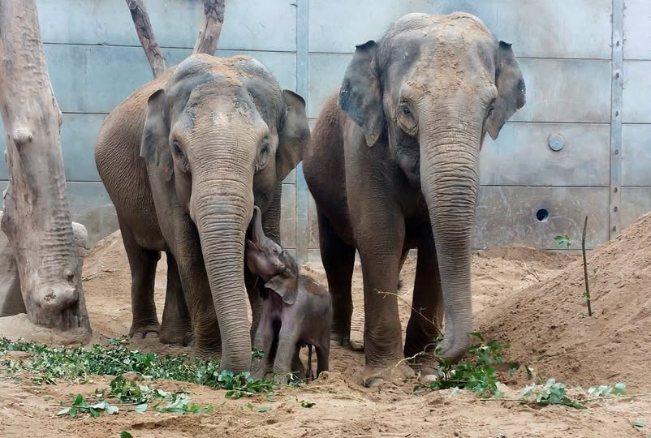
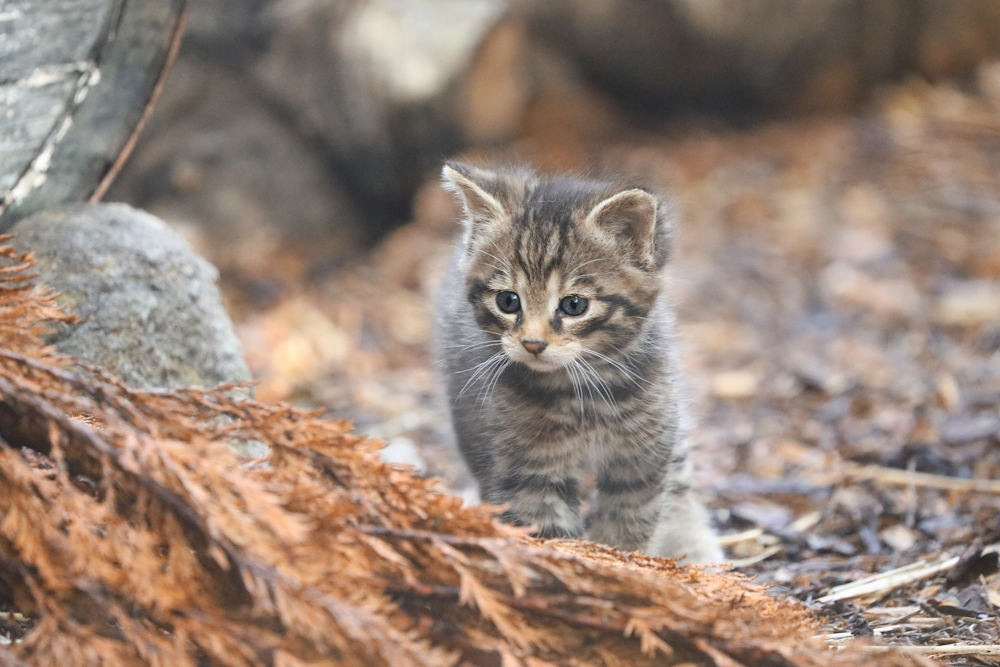
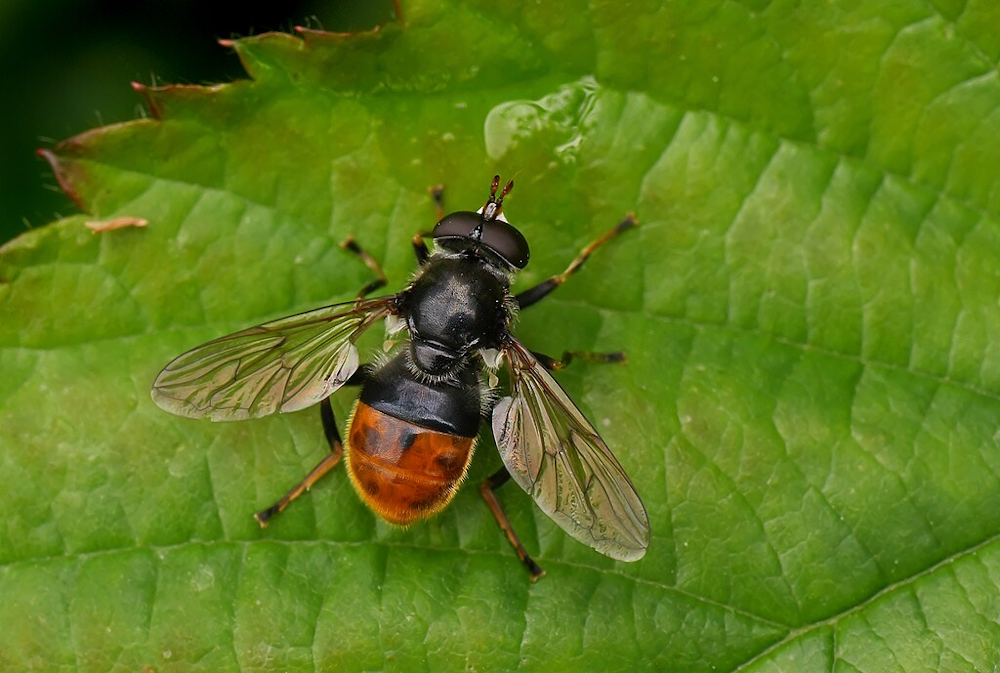
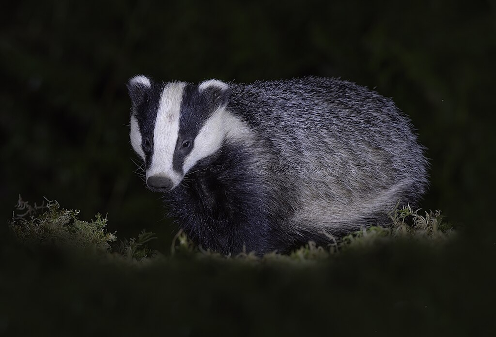
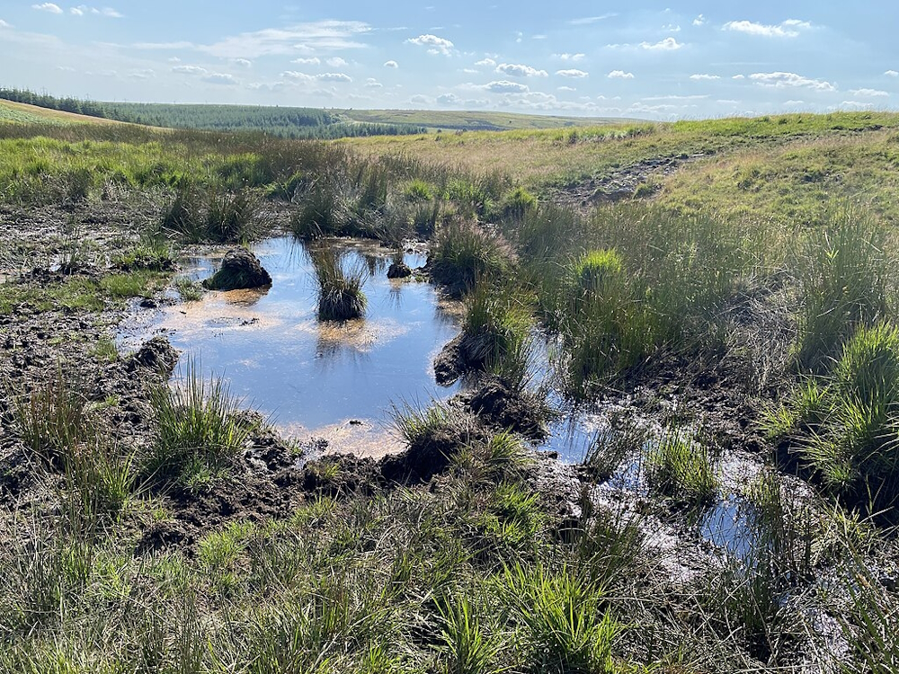
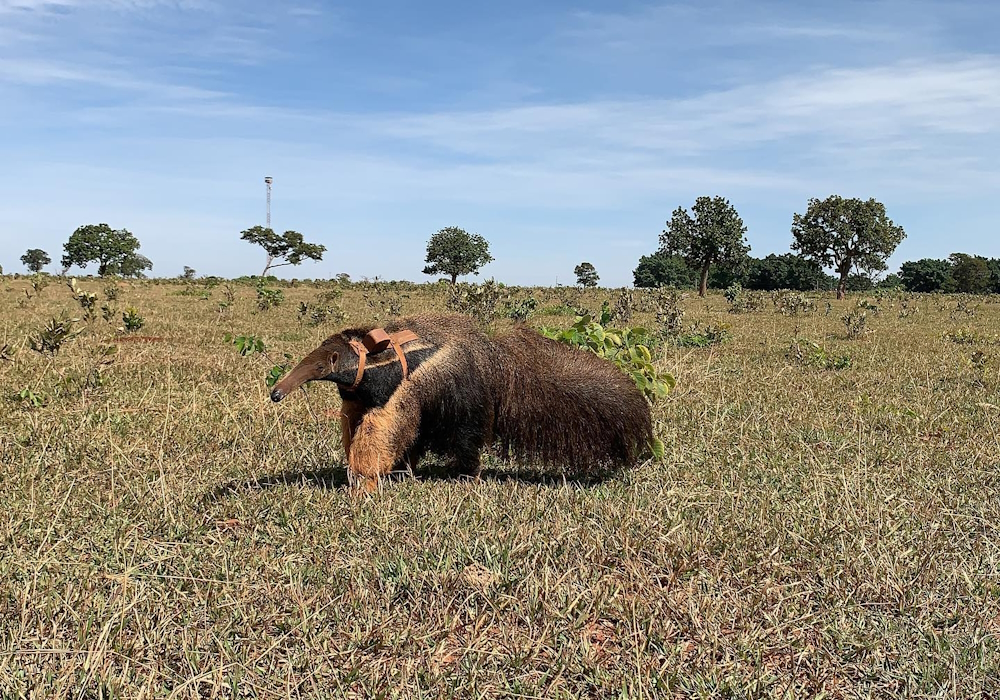
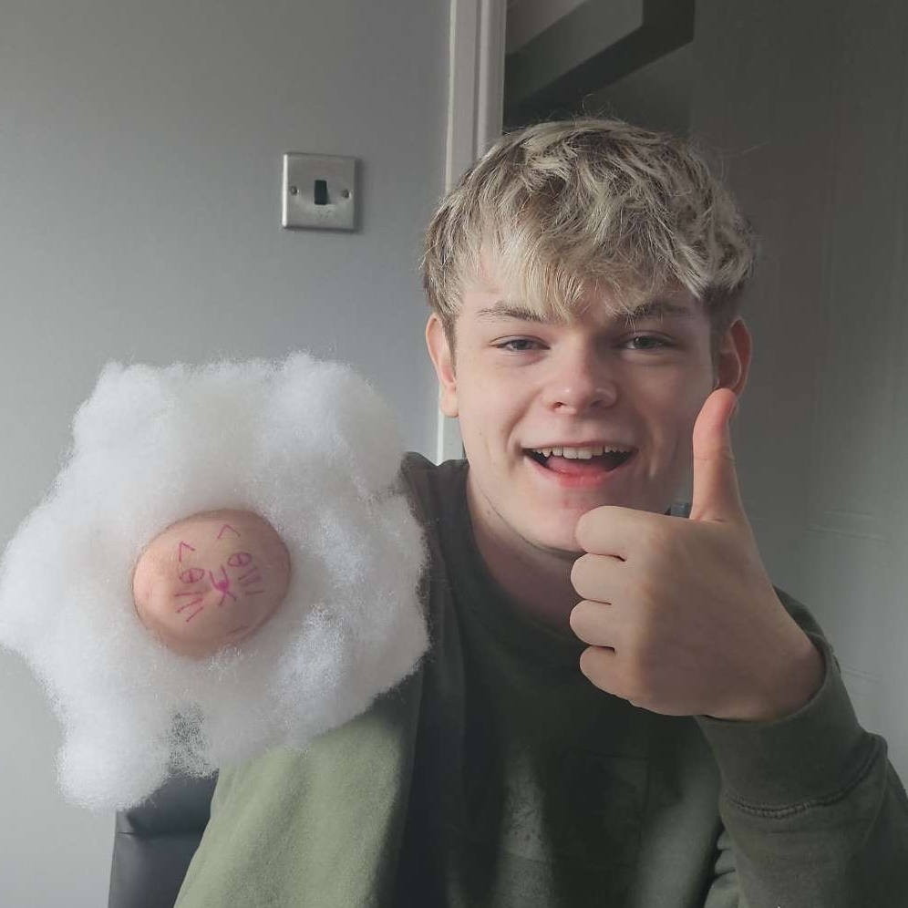

After an almost two-year-long pregnancy, Tara and her new calf Zaiya are both doing well. (Image credit: Blackpool Zoo)

(Cover image credit: RZSS)
Welcome to the first Ex Situ Conservation News Rundown for July to September 2025. Here I will briefly go over news stories from several zoos and other conservation organisations. These will mostly be from UK based and international organisations, but if you think I have missed anything, let me know and I will try to include it in the next rundown for October to December 2025. I will not go into a lot of detail for most of these stories, just the key points, but I will provide links to the full stories throughout.
The Royal Zoological Society of Scotland (RZSS) has welcomed some new births to their Highland Wildlife Park, including an endangered Przewalski’s horse (Equus ferus przewalskii) foal and some new wildcat (Felis silvestris) kittens. Cameras inside the wildcats’ den boxes have recorded the behaviour of the females caring for their young, providing important information about how they interact in the first few weeks of their lives. These new kittens, one of the most threatened mammal species in Britain, could potentially be released into the wild in Scotland as part of the Saving Wildcats project, which has already released over 35 individuals. Read more here and here.
Also from one of RZSS’s zoos, Edinburgh Zoo has successfully hatched a Chilean flamingo (Phoenicopterus chilensis) chick for the first time in nine years as part of the zoo’s breeding programme for this species, which is classified by the IUCN as Near Threatened[1]. This new arrival will join the rest of its flock at the zoo, with individuals estimated to be over 60 years old! Read more here.
At Blackpool zoo, an endangered Asian elephant (Elephas maximus) calf has been born. Years of planning and preparation at the zoo meant that any issues could be dealt with quickly, which came in handy as the new calf had difficulty suckling from its mother, Tara. The keeper team were quick to express milk from her mother so that the calf could benefit from its colostrum, which plays an important role in developing immunity in the calf. Read more here.

After an almost two-year-long pregnancy, Tara and her new calf Zaiya are both doing well. (Image credit: Blackpool Zoo)
Twycross Zoo in Leicestershire has announced the birth of a newborn bonobo (Pan paniscus), an endangered species of great ape and the closest living relative of humans. This baby was born as part of a conservation programme for the species which aims to create a healthy, genetically diverse population in zoos to support wild populations. Read more here.
Two endangered Amur tiger (Panthera tigris altaica) cubs have been born at Knowsley Safari in Merseyside. Only around 500 of this tiger subspecies are left in the wild, and the cubs born at Knowsley are part of an international breeding programme to help protect them. Read more here.
As part of the European Endangered Species Programmes, which aim to maintain healthy populations of several animals in zoos across Europe, Banham Zoo, run by the Zoological Society of East Anglia (ZSEA), has welcomed the births of a large number of endangered mammals, birds, and invertebrates. This includes two red panda (Ailurus fulgens) cubs, Chilean flamingos (Phoenicopterus chilensis), and scarlet ibis (Eudocimus ruber) chicks, among many others. Read more here and here.
Several white-clawed crayfish (Austropotamobius pallipes) have been successfully released after hatching and rearing at the Yorkshire Crayfish Hatchery. This endangered species of crayfish is threatened by habitat loss and invasive species, and in the first year of its operation, the Hatchery has released over 50 individuals back into the wild, in areas that are protected from invasive signal crayfish (Pacifastacus leniusculus). Read more here.
RZSS have launched the first ever conservation strategy for the pine hoverfly (Blera fallax), an important yet declining insect species that acts as both a pollinator and a decomposer in Scotland’s forests. Part of this strategy will be the annual release of thousands of pine hoverflies from RZSS’s breeding programme into Abernethy nature reserve, Glenmore forest park, and Anagach woods. Read more here.

By focusing both on habitat restoration and hoverfly breeding for release, RZSS are helping to support an entire ecosystem, not just one species. (Image credit: Franck Vassen, licensed under CC BY 2.0)
57 lesser night gecko (Nactus coindemirensis) eggs have been returned to the wild by Durrell Wildlife Conservation Trust. After thirty individuals were rescued from the wild and placed in Jersey Zoo after a large oil spill in 2020, they received highly specialised care. After eventually breeding, 57 eggs were transferred back to Mauritius. Of this, 88% have successfully hatched, and will help to strengthen the genetic diversity of the population. Read more here.
RZSS’s field conservation team have been surveying for pond mud snails (Omphiscola glabra) in the Pentland Hills and examining ponds to prepare to release some individuals of the rare species bred at Highland Wildlife Park. It is important to establish new populations of the species in order to ensure their long-term survival. Planning for these releases is due to begin this Autumn. Read more here.
For the second year in a row, RZSS has confirmed that new wildcat kittens have been born to five females that were previously released by the Saving Wildcats project in the Cairngorms National Park. This is a sign that the animals are thriving, which is a great success for the project. Read more here.
The Zoological Society of London (ZSL) have teamed up with the National Farmers’ Union to support a project led by farmers in Cornwall which will test the efficacy of badger vaccination as a way to eradicate bovine tuberculosis (bTB), a disease which severely affects cattle across the UK. Currently, any cattle that test positive for bTB have to be destroyed by UK law, and further restrictions are placed on the rest of the herd if an infected individual is found. While most bTB cases are transmitted between herds, wild badgers (Meles meles) can also spread the disease. Because of this, badgers are often killed by farmers as an attempt to mitigate the risk of the disease spreading. If successful, this vaccination scheme will help protect not only farmers’ cattle and livelihoods, but also wild badgers. A similar study has been performed on a smaller scale with great success, reducing the cases of bTB in badgers from 16% to 0%. Read more here.

Although badgers are often culled as a way to prevent the spread of bTB to cattle, it has been shown that this is not an effective method[3]. (Image credit: Caroline Legg, licensed under CC BY 2.0)
New research led by ZSL, Lancaster University, and the Angel Shark Project has found that critically endangered female angelsharks (Squatina squatina) are avoiding important breeding grounds when the water temperature becomes too warm, which could disrupt the species’ reproduction. The number of days per year with temperatures above 22.5 degrees Celsius (the observed tolerable limit for female angelsharks) around the Canary Islands has almost tripled in 4 years. This study provides real evidence of the effects of climate change on marine wildlife and ecosystems. Read more here.
A new assessment by ZSL on the 100 leading tropical forestry companies has shown that an extreme majority do not disclose the origins of their timber and pulp. This means that customers and investors cannot be certain that the timber they buy is sourced responsibly. ZSL is calling on these companies to be more transparent so that we can be sure that tropical forests are being protected. Read more here.
Zoos across the UK and Europe are calling on the Department for Environment, Food, and Rural Affairs (DEFRA) to change the legislation surrounding the import of ungulates (hoofed animals) to the UK. The current legislation, which prioritises biosecurity and was introduced in 2024, has made it difficult and expensive for UK zoos to participate in international breeding programmes. Because of this, DEFRA has been asked to amend the current rules to create exemptions for certain cases. Read more here.
Over 60 UN nations have ratified the Biodiversity Beyond National Jurisdiction Agreement. This is the first legally binding international framework focused on protecting marine life in international waters. It allows protected areas to be created beyond national borders, which is important for meeting the UN’s goal to protect at least 30% of the ocean by 2030. Read more here.
After campaigning by the Royal Society for the Protection of Birds (RSPB), DEFRA have agreed to expand the ban on burning heather and grass on deep peat in England to more than triple the current area. Peatlands are an important habitat for some of the UK’s rarest species. As well as this, they can improve water quality and reduce the risk of flooding. They store a lot of carbon, which is trapped in normal conditions, but burning vegetation on them directly damages these areas, which can release excessive amounts of carbon into the atmosphere. This is a huge step forward in helping to protect these environments. Read more here.

Peatlands in the UK are home to some amazing wildlife, including some of the UK's rarest bird species. (Image credit: Alan Hughes, licensed under CC BY-SA 2.0)
After decades of campaigning by several conservation organisations including the RSPB, the UK Government has announced new restrictions on the use of lead in ammunition, to be put into law by Summer 2026. It is estimated that 7,000 tonnes of lead is released into the UK countryside each year as a result of shooting, which can poison local wildlife and pollute their habitats. This has been shown in a number of bird species, which die each year from lead poisoning either from accidental ingestion of lead shotgun pellets, or from eating lead-poisoned carrion. Limiting the amount of lead permitted in ammunition will hopefully reduce the number of birds affected by lead poisoning. Read more here.
RZSS has been working with Brazil’s Institute of Wild Animal Conservation (ICAS) on a number of projects to help protect Brazilian wildlife. A community fire brigade has been set up with ranch owners in order to help protect the Pantanal, an important habitat for giant armadillos (Priodontes maximus), from wildfires. Additionally, ICAS has conducted several education outreach programs, including exhibitions on wildlife in local shopping malls and a talk on the importance of dog vaccination both for human health and for wildlife. Read more here.
ICAS has also been monitoring the location of certain animals. Unfortunately, a giant anteater (Myrmecophaga tridactyla) tracked by ICAS keeps settling by a major highway, despite attempts at moving her. This is an issue as highways and road traffic pose one of the biggest threats to the species. She has since been moved to a new location with hopes that she will remain there. Read more here.

One of ICAS' priorities is protecting wildlife from the effects of road traffic on highways, as this is one of the leading causes of wildlife mortality in Brazil[2]. (Image credit: ICAS)
At UmPhafa Nature Reserve in KwaZulu-Natal, South Africa, a female leopard (Panthera pardus) has been caught and relocated to a different reserve in need of a female. Already a successful mother to four sets of cubs, this leopard was among over twenty individuals on the reserve at the beginning of the year, and the team at UmPhafa are hoping to relocate more of the leopards away from the reserve in the near future. Unfortunately, one of the two cheetahs (Acinonyx jubatus) that were due to be released on the reserve passed away suddenly from as yet unknown causes just two days before their scheduled release. In the end, it was decided that the remaining male, Duma, should still be released. Since then, he has been managing very well on his own, and the team are hoping that he will meet with the female on the reserve soon. Additionally, UmPhafa has taken in another male cheetah from a different reserve in KwaZulu-Natal who was injured, but is predicted to make a full recovery. He is due to be released around late October-November this year. Read more here and here.
Four Montagu’s harriers (Circus pygargus), Britain’s rarest breeding bird, have successfully been raised in the UK for the first time in 6 years. After a pair of adults were spotted in the country, they were monitored closely by the RSPB, and when their chicks hatched, a protective fence was placed around the nest, ensuring their survival. Read more here.
[1] BirdLife International. 2018. Phoenicopterus chilensis. The IUCN Red List of Threatened Species 2018: e.T22697365A132068236. Available at: https://dx.doi.org/10.2305/IUCN.UK.2018-2.RLTS.T22697365A132068236.en (Accessed: 28/09/2025)
[2] ICAS. No date. Anteaters and Highways Project. ICAS [online]. Available at: https://www.icasconservation.org.br/projetos/bandeiras-e-rodovias/?lang=en (Accessed: 29/09/2025)
[3] Woodroffe, R., Donnelly, C. A., Cox, D. R., Bourne, F. G., Cheeseman, C. L., Delahay, R. J., Gettinby, G., McInerney, J. P. and Morrison, W. I. 2005. Effects of culling on badger Meles meles spatial organization: implications for the control of bovine tuberculosis. Journal of Applied Ecology, 43(1), pp. 1-10. Available at: https://doi.org/10.1111/j.1365-2644.2005.01144.x (Accessed: 29/09/2025)

Hi! I'm Robbie, a semi-recent graduate of animal science from Anglia Ruskin University. My main goal professionally is to enter the world of zookeeping (don't ask how that's going so far), and this website is my way of keeping my brain occupied with zoo-related topics in the meantime.
Until about 6 months before starting university, my plan was to study linguistics. I thought it would be better to keep my professional life separate from my hobbies though, and decided to study animals and conservation very last-minute (which surprised basically everybody who knew me).
As well as my ability to make impulsive decisions that impact the rest of my life, I also have quite a few hobbies and skills (I'm a very indecisive person), including very basic web design. This site was essentially born from two of my most different interests.
Thank you for visiting, I hope you find something you like here!